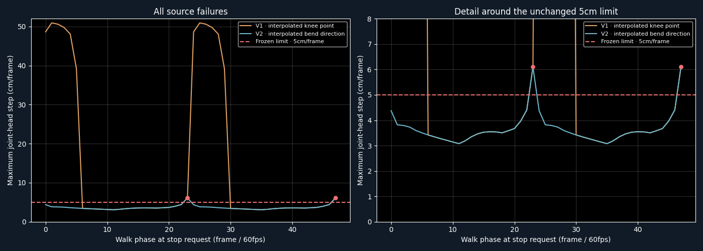

Source preflight FAIL: 46/48 phases pass after two source revisions. Godot shipping target; Pixi harness. The initial knee-plane flip is repaired, but phases23 and47 still move one knee6.099cm in a single frame, above the unchanged5cm limit. Representative rendering and playback were not started because the source gate failed.
Both versions preserve all measured foot contacts, endpoints, bone lengths and book size. A direct walk-to-idle switch at phase0 slides the planted foot40cm and fails the2cm contact bar. This demonstrates why independently valid clips cannot simply be switched without a transition.

V1 fails fourteen phases, with a maximum50.94cm knee jump (48.65cm in the focused0/24diagnostic). V2 interpolates normalized leg-bend directions and reduces that to two failures. The detail plot clips the large V1 peaks only to show the acceptance boundary; the full plot preserves their range. The remaining failures occur at frame22 of the0.6-second transition, in the second footstep.
The experiment has reached its two-source-revision limit. Both Blender files, all48-phase measurements and the focused joint diagnostics remain intact. No thresholds were relaxed, and no third source repair is being counted as part of this experiment.
Next: a separate timing experiment will compare a smoother0.6-second foot trajectory with the existing trajectory at0.8seconds, holding geometry, target foot placements and acceptance limits fixed. Choose the fastest candidate that passes source and visual checks. These durations remain test parameters; production combat responsiveness is not qualified.
Report · Receipt and limits · V1 · all phase evidence · V2 · all phase evidence · Large knee-flip diagnosis · Remaining frame22 failures